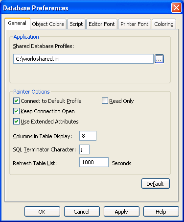
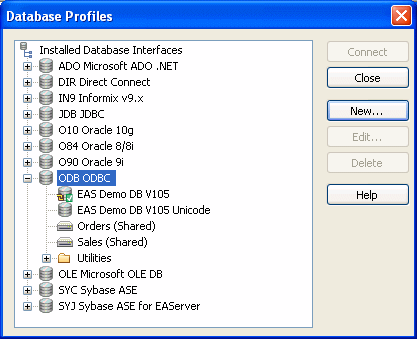

When you work in PowerBuilder, you can share database profiles among users.
 Sharing database profiles between Sybase tools Since the database profiles used by PowerBuilder, InfoMaker,
and DataWindow Designer are stored in a common registry location,
database profiles you create in any of these tools are automatically
available for use by the others, if the tools are running on the
same computer.
Sharing database profiles between Sybase tools Since the database profiles used by PowerBuilder, InfoMaker,
and DataWindow Designer are stored in a common registry location,
database profiles you create in any of these tools are automatically
available for use by the others, if the tools are running on the
same computer.
This section describes what you need to know to set up, use, and maintain shared database profiles in PowerBuilder.
You can share database profiles in the PowerBuilder development environment by specifying the location of a file containing the profiles you want to share. You specify this location in the Database Preferences property sheet in the Database painter.
To share database profiles among all PowerBuilder users at your site, store a profile file on a network file server accessible to all users.
When you share database profiles, PowerBuilder displays shared database profiles from the file you specify as well as those from your registry.
Shared database profiles are read-only. You can select a shared profile to connect to a database—but you cannot edit, save, or delete profiles that are shared. (You can, however, make changes to a shared profile and save it on your computer, as described in "Making local changes to shared database profiles".)
To set up shared database profiles in PowerBuilder, you specify the location of the file containing shared profiles in the Database painter's Database Preferences property sheet.
For instructions, see "Setting up shared database profiles".
You set up shared database profiles in the Database Preferences property sheet.
 To set up shared database profiles:
To set up shared database profiles:
In the Database painter, select Design>Options from the menu bar.
The Database Preferences property sheet displays. If necessary, click the General tab to display the General property page.
In the Shared Database Profiles box, specify the location of the file containing the database profiles you want to share. Do this in either of the following ways:
In the following example, c:\work\share.ini is the location of the file containing the database profiles to be shared:

PowerBuilder saves your Shared Database Profiles setting in the registry.
You select a shared database profile to connect to a database the same way you select a profile stored in your registry. You can select the shared profile in the Database Profiles dialog box or from the File>Connect menu.
You can select and connect to a shared database profile in the Database Profiles dialog box.
 To select a shared database profile in the Database
Profiles dialog box:
To select a shared database profile in the Database
Profiles dialog box:
Click the Database Profile button in the PowerBar
or
Select Tools>Database Profile from the menu bar.
The Database Profiles dialog box displays, listing both shared and local profiles. Shared profiles are denoted by a network icon and the word (Shared).

Select the name of the shared profile you want to access and click Connect.
PowerBuilder connects to the selected database and returns you to the painter workspace.
Because shared database profiles can be accessed by multiple users running PowerBuilder, you should not make changes to these profiles. However, if you want to modify and save a copy of a shared database profile for your own use, you can edit the profile and save the modified copy in your computer's registry.
 To save changes to a shared database profile in
your registry:
To save changes to a shared database profile in
your registry:
In the Database Profiles dialog box, select the shared profile you want to edit and click the Edit button.
In the Database Profile Setup dialog box that displays, edit the profile values as needed and click OK.
A message box displays, asking if you want to save a copy of the modified profile to your computer.
Click Yes.
PowerBuilder saves the modified profile in your computer's registry.
If you maintain the database profiles for PowerBuilder at your site, you might need to update shared database profiles from time to time and make these changes available to your users.
Because shared database profiles can be accessed by multiple users running PowerBuilder, it is not a good idea to make changes to the profiles over a network. Instead, you should make any changes locally and then provide the updated profiles to your users.
 To maintain shared database profiles at your site:
To maintain shared database profiles at your site:
Make and save required changes to the shared profiles on your own computer. These changes are saved in your registry.
For instructions, see "Making local changes to shared database profiles".
Export the updated profile entries from your registry to the existing file containing shared profiles.
For instructions, see "Importing and exporting database profiles".
If they have not already done so, have users specify the location of the new profiles file in the Database Preferences property sheet so that they can access the updated shared profiles on their computer.
For instructions, see "Setting up shared database profiles".